Batch 1 — Sign in and sign up
Approved and built. Until an SMS provider is connected, the live site shows the password version (next page); the OTP screens switch on by themselves once one is set.


The app as built, in the approved design, and the corrections still suggested
Approved and built. Until an SMS provider is connected, the live site shows the password version (next page); the OTP screens switch on by themselves once one is set.


Approved and built. Profile left the tab bar for the round button at the top right of Home; Scan moved to the centre, where the thumb rests.


Real screenshots of this branch at 360 × 800, a common budget-phone size, with demo data.
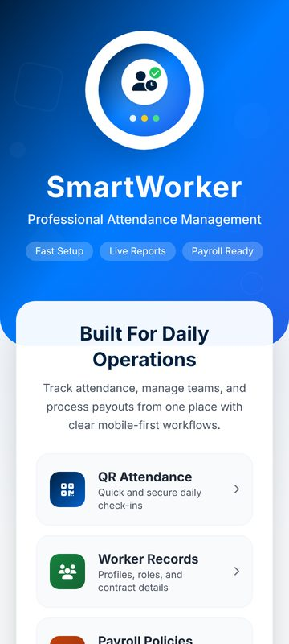
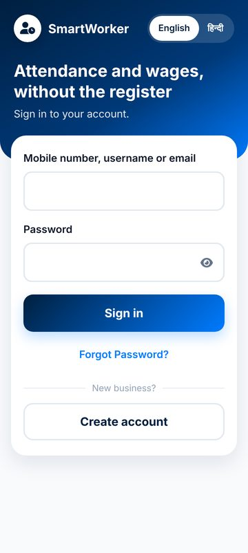
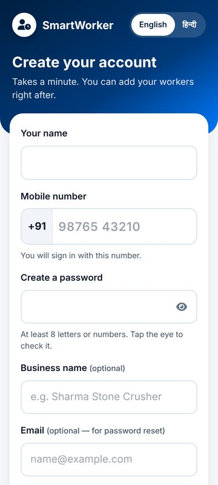
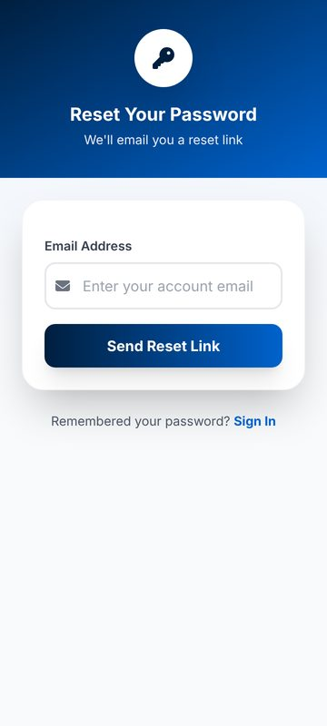
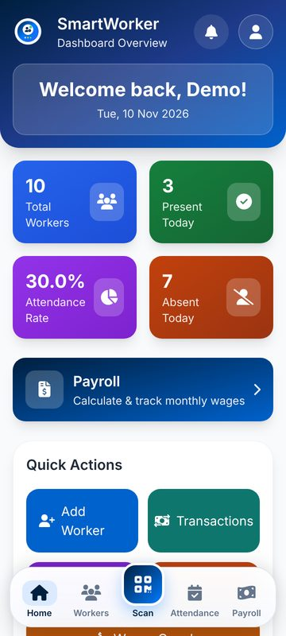

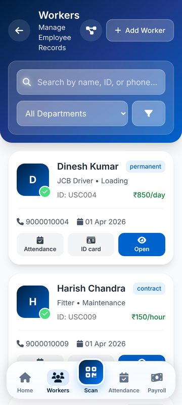
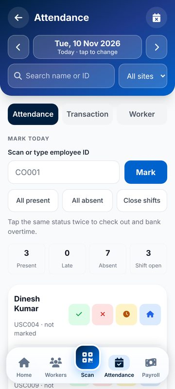
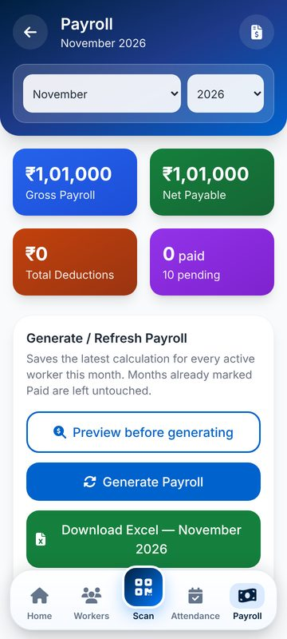
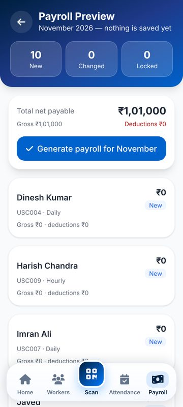
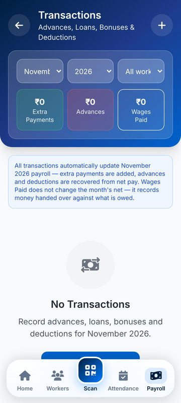
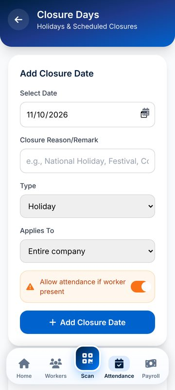
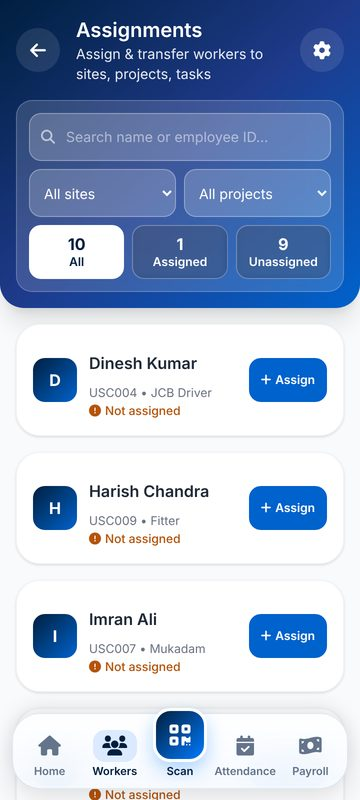
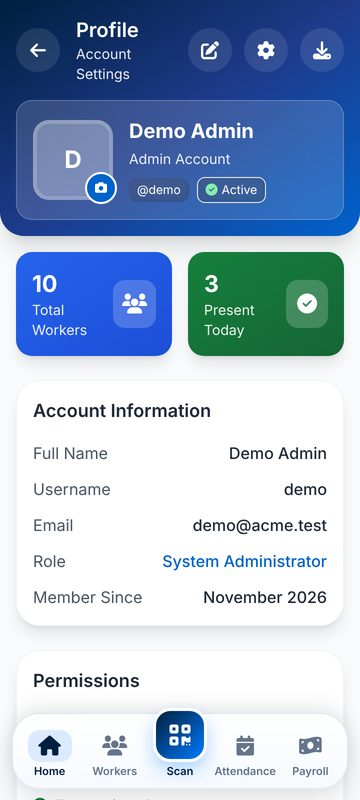
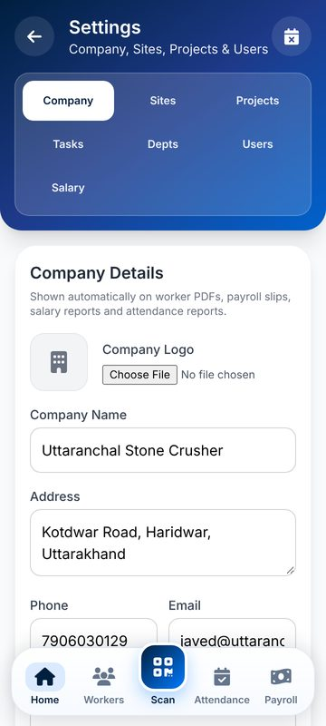
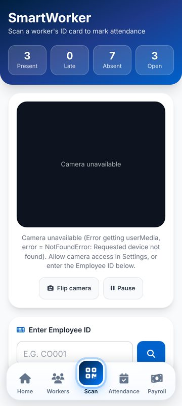
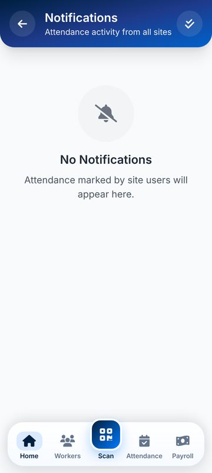
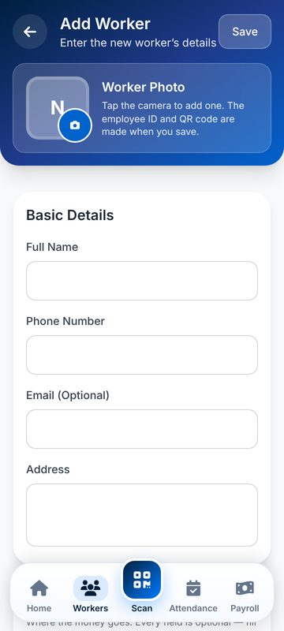
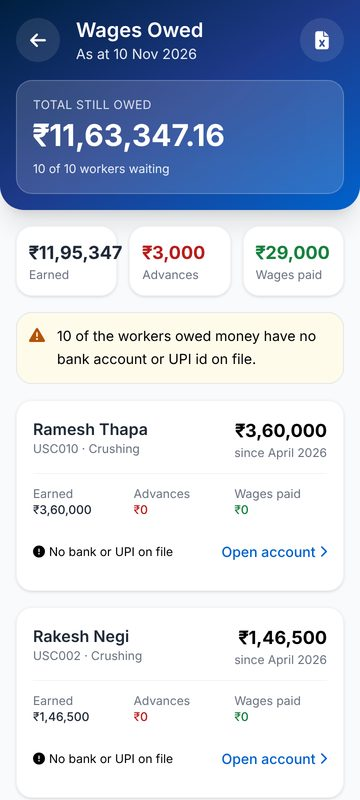
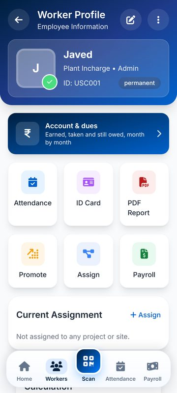
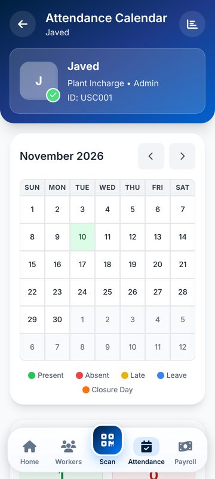
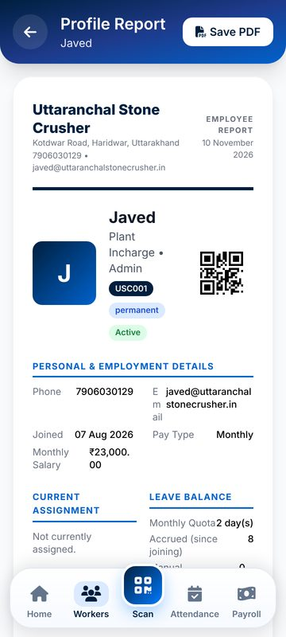
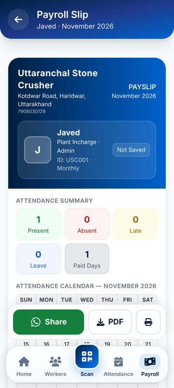
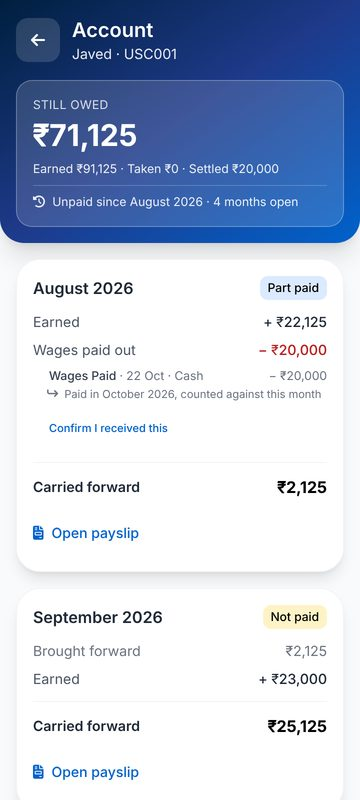
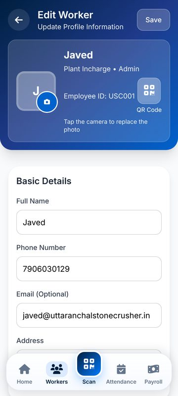
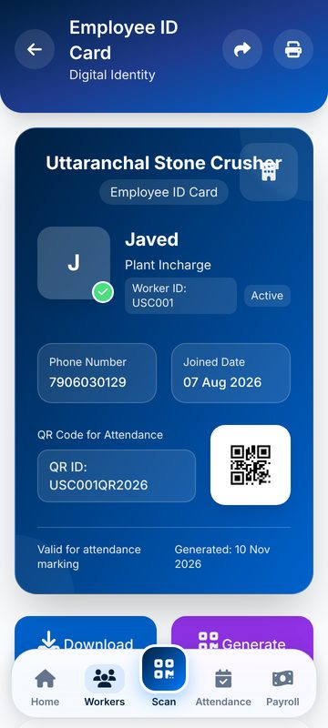
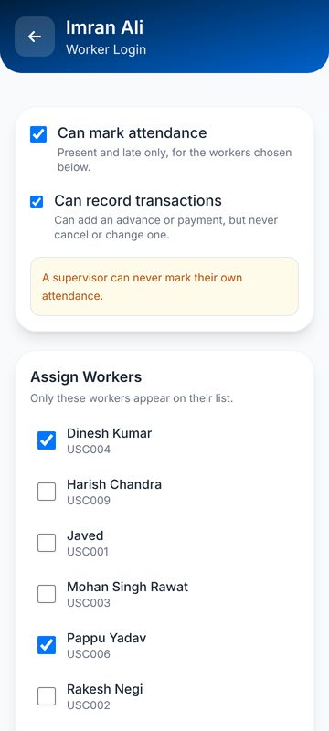
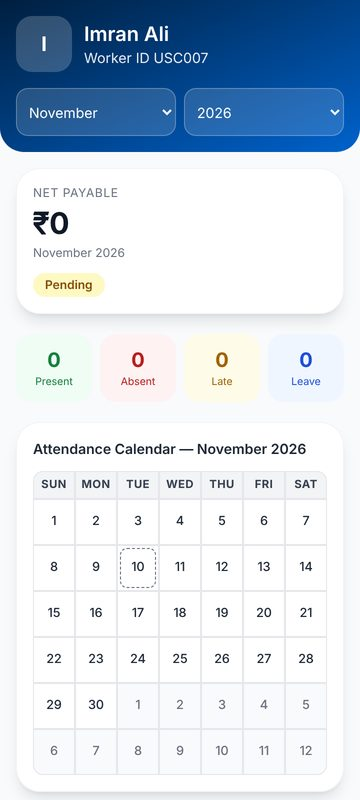
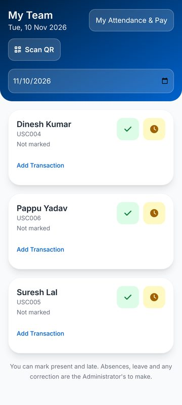
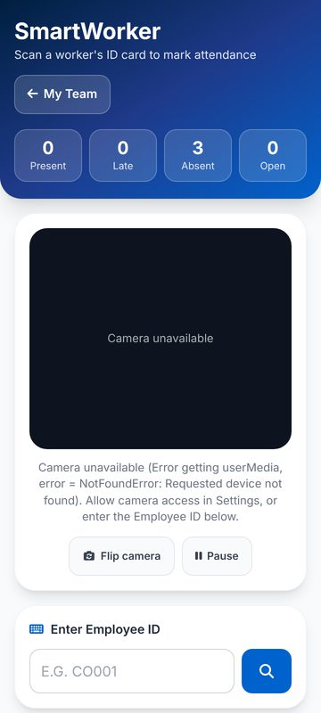
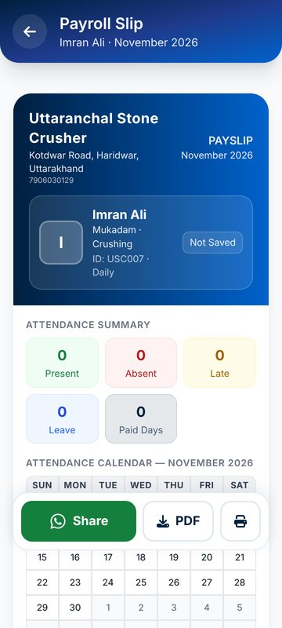
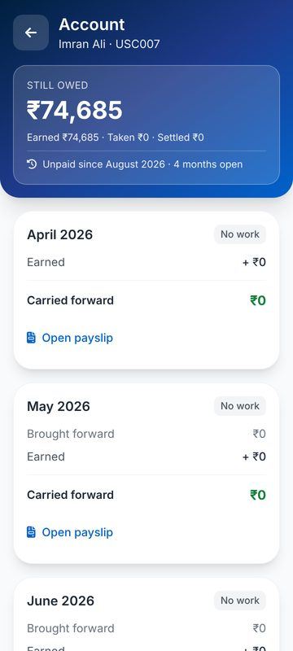
One bar at the foot of the payslip: Share first, then PDF and Print. Share sends the same PDF that Save makes: through the phone browser's share sheet, through Android's share sheet inside the app (only files the app saved), or else the PDF downloads and WhatsApp opens with the name, month and net pay as text. Needs a phone test inside the APK.

Taken to every screen, not just the payslip. At 150% text: from 15 screens running off the side at the start of the audit to none, and none on a 320 px phone. Printing and the saved PDF are unchanged.
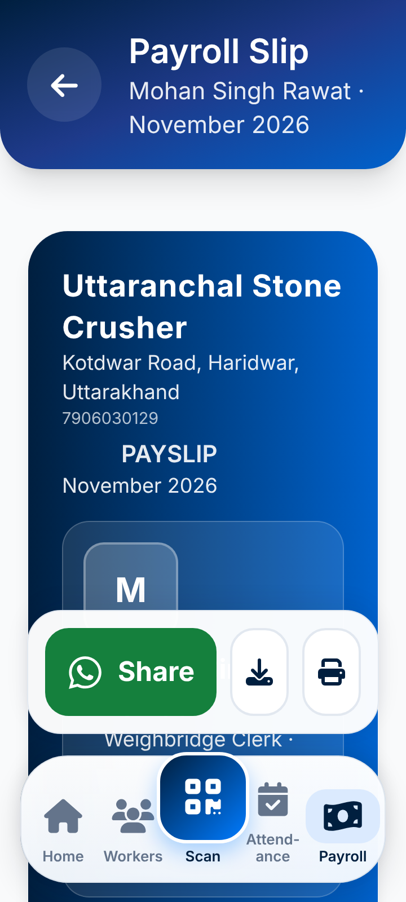

There is no help, no Privacy Policy or Terms (the sign-up links do nothing), and no way to delete an account. Google Play requires the policy link and account deletion. Needs your details (D3): support WhatsApp number, policy text.

Says plainly what is deleted now and what must be kept by law, then asks for a typed DELETE and the password, so it cannot happen by accident. A web page with the same form is also required by Play. Needs from you: how many years wage records are kept (the [__] below).

Marking (scan or type an ID, all present/absent, the roster with P/L/A) now comes straight after the header, and the month calendar with its day detail after that. The first P/L/A row moved from 1,710 px down the page to 602 px at normal text (onto the first screen), and from 3,348 px to 1,111 px at the largest.
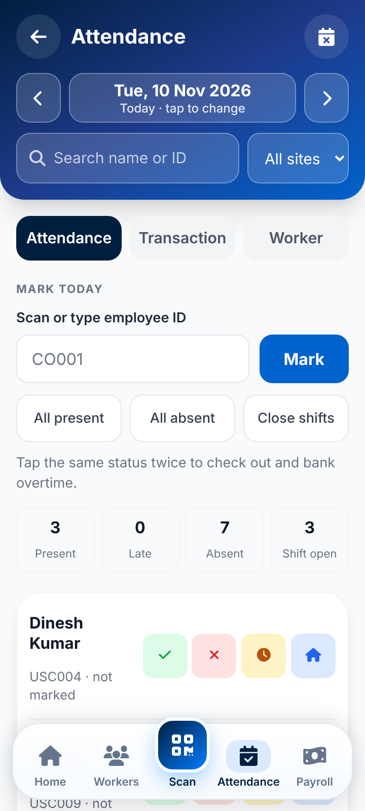
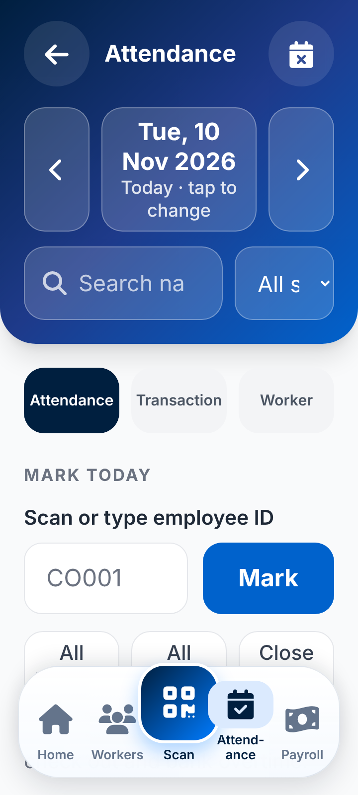
| # | Decision | My recommendation |
|---|---|---|
| D3 | S3 and S4 (help, legal, delete account) | Send the support WhatsApp number, policy text and how many years wage records are kept |
| D1 | SMS provider for OTP | MSG91 or 2Factor with TRAI DLT; sign-up already works without it |
| D2 | The public repository held passwords and personal data | Make it private today, and change the live admin and supervisor passwords |
| D3 | Privacy Policy, Terms, deletion rules | Send business name, contact, grievance officer, years wage records are kept |
| D4 | Worker photos are in public storage | Make storage private (signed links) |
| D7 | Render free plan sleeps (slow first open) | Paid plan, about $7/month, if used daily |
| D8 | Play Store release | Create a release signing key and keep it safe forever |
Install the API 36 test APK (GitHub → Actions → latest Build Android APK run on this branch → Artifacts), open any payslip and tap Save PDF. That is the one big fix that could not be checked without a phone. The full list is in docs/audit/MANUAL_TEST_CHECKLIST.md.